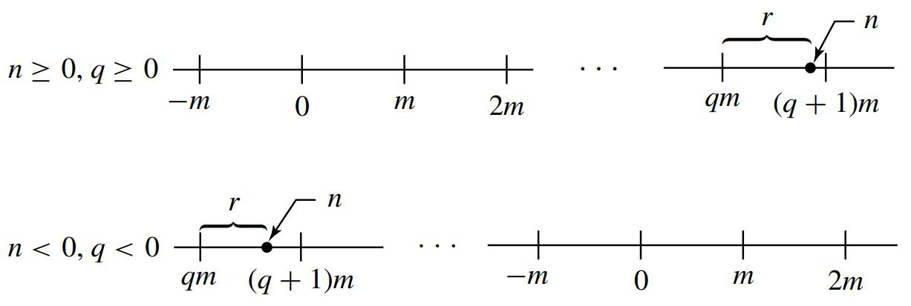

§ 6. Cyclic Groups¶
Definition 6.0.1 : Order of an Element
Let \(a\) be an element of a group \(G\). If the cyclic subgroup \(\langle a\rangle\) of \(G\) is finite, then the order of \(a\) is the order \(|\langle a\rangle|\) of this cyclic subgroup. Otherwise, we say that \(a\) is of infinite order.
We will see in this section that if \(a \in G\) is of finite order \(m\), then \(m\) is the smallest positive integer such that \(a^{m}=e\).
Elementary Properties of Cyclic Groups¶
Theorem 6.1 : Every cyclic group is abelian.
Every cyclic group is abelian.
Proof
Let \(G\) be a cyclic group and let \(a\) be a generator of \(G\) so that
If \(g_{1}\) and \(g_{2}\) are any two elements of \(G\), there exist integers \(r\) and \(s\) such that \(g_{1}=a^{r}\) and \(g_{2}=a^{s}\). Then
so \(G\) is abelian.
Theorem 6.3 : Division Algorithm for \(\mathbb{Z}\)
If \(m\) is a positive integer and \(n\) is any integer, then there exist unique integers \(q\) and \(r\) such that
Proof

Figure 6.1
We give an intuitive diagrammatic explanation, using Fig. 6.1. On the real \(x\)-axis of analytic geometry, mark off the multiples of \(m\) and the position of \(n\). Now \(n\) falls either on a multiple \(q m\) of \(m\) and \(r\) can be taken as 0 , or \(n\) falls between two multiples of \(m\). If the latter is the case, let \(q m\) be the first multiple of \(m\) to the left of \(n\). Then \(r\) is as shown in Fig. 6.1. Note that \(0 \leq r<m\). Uniqueness of \(q\) and \(r\) follows since if \(n\) is not a multiple of \(m\) so that we can take \(r=0\), then there is a unique multiple \(q m\) of \(m\) to the left of \(n\) and at distance less than \(m\) from \(n\), as illustrated in Fig. 6.1.
In the notation of the division algorithm, we regard \(q\) as the quotient and \(r\) as the nonnegative remainder when \(n\) is divided by \(m\).
Theorem 6.6 : A subgroup of a cyclic group is cyclic.
A subgroup of a cyclic group is cyclic.
Proof
Let \(G\) be a cyclic group generated by \(a\) and let \(H\) be a subgroup of \(G\). If \(H=\{e\}\), then \(H=\langle e\rangle\) is cyclic. If \(H \neq\{e\}\), then \(a^{n} \in H\) for some \(n \in \mathbb{Z}^{+}\). Let \(m\) be the smallest integer in \(\mathbb{Z}^{+}\)such that \(a^{m} \in H\).
We claim that \(c=a^{m}\) generates \(H\); that is,
We must show that every \(b \in H\) is a power of \(c\). Since \(b \in H\) and \(H \leq G\), we have \(b=a^{n}\) for some \(n\). Find \(q\) and \(r\) such that
in accord with the division algorithm. Then
so
Now since \(a^{n} \in H, a^{m} \in H\), and \(H\) is a group, both \(\left(a^{m}\right)^{-q}\) and \(a^{n}\) are in \(H\). Thus
Since \(m\) was the smallest positive integer such that \(a^{m} \in H\) and \(0 \leq r<m\), we must have \(r=0\). Thus \(n=q m\) and
so \(b\) is a power of \(c\).
Corollary 6.7 : Subgroups of \(\mathbb{Z}\)
The subgroups of \(\mathbb{Z}\) under addition are precisely the groups \(n \mathbb{Z}\) under addition for \(n \in \mathbb{Z}\).
Proof
\(\mathbb{Z}\) under addition is cyclic and for a positive integer \(n\), the set \(n \mathbb{Z}\) of all multiples of \(n\) is a subgroup of \(\mathbb{Z}\) under addition, the cyclic subgroup generated by \(n\). Theorem 6.6 shows that these cyclic subgroups are the only subgroups of \(\mathbb{Z}\) under addition.
Definition 6.8 : Greatest Common Divisor
Let \(r\) and \(s\) be two positive integers. The positive generator \(d\) of the cyclic group
under addition is the greatest common divisor (abbreviated gcd) of \(r\) and \(s\). We write \(d=\operatorname{gcd}(r, s)\).
Note from the definition that \(d\) is a divisor of both \(r\) and \(s\) since both \(r=1 r+0 s\) and \(s=0 r+1 s\) are in \(H\). Since \(d \in H\), we can write
for some integers \(n\) and \(m\). We see that every integer dividing both \(r\) and \(s\) divides the right-hand side of the equation, and hence must be a divisor of \(d\) also. Thus \(d\) must be the largest number dividing both \(r\) and \(s\); this accounts for the name given to \(d\) in Definition 6.8.
Definition 6.9.1 : Relatively Prime
Two positive integers are relatively prime if their gcd is \(1\).
Theorem 6.9.2
If \(r\) and \(s\) are relatively prime and if \(r\) divides \(s m\), then \(r\) must divide \(m\).
Proof
If \(r\) and \(s\) are relatively prime, then we may write
Multiplying by \(m\), we obtain
Now \(r\) divides both arm and \(b s m\) since \(r\) divides \(s m\). Thus \(r\) is a divisor of the right-hand side of this equation, so \(r\) must divide \(m\).
The Structure of Cyclic Groups¶
Theorem 6.10 : All cyclic groups are isomorphic to \(\langle\mathbb{Z},+\rangle\) or \(\left\langle\mathbb{Z}_{n},+{ }_{n}\right\rangle\).
Let \(G\) be a cyclic group with generator \(a\). If the order of \(G\) is infinite, then \(G\) is isomorphic to \(\langle\mathbb{Z},+\rangle\). If \(G\) has finite order \(n\), then \(G\) is isomorphic to \(\left\langle\mathbb{Z}_{n},+{ }_{n}\right\rangle\).
Proof
-
Case I : For all positive integers \(m, a^{m} \neq e\).
In this case we claim that no two distinct exponents \(h\) and \(k\) can give equal elements \(a^{h}\) and \(a^{k}\) of \(G\). Suppose that \(a^{h}=a^{k}\) and say \(h>k\). Then
\[ a^{h} a^{-k}=a^{h-k}=e, \]contrary to our Case I assumption. Hence every element of \(G\) can be expressed as \(a^{m}\) for a unique \(m \in \mathbb{Z}\). The map \(\phi: G \rightarrow \mathbb{Z}\) given by \(\phi\left(a^{i}\right)=i\) is thus well defined, one to one, and onto \(\mathbb{Z}\). Also,
\[ \phi\left(a^{i} a^{j}\right)=\phi\left(a^{i+j}\right)=i+j=\phi\left(a^{i}\right)+\phi\left(a^{j}\right) \]so the homomorphism property is satisfied and \(\phi\) is an isomorphism.
-
Case II : \(a^{m}=e\) for some positive integer \(m\).
Let \(n\) be the smallest positive integer such that \(a^{n}=e\). If \(s \in \mathbb{Z}\) and \(s=n q+r\) for \(0 \leq r<n\), then \(a^{s}=a^{n q+r}=\left(a^{n}\right)^{q} a^{r}=e^{q} a^{r}=a^{r}\). As in Case 1, if \(0<k<h<n\) and \(a^{h}=a^{k}\), then \(a^{h-k}=e\) and \(0<h-k<n\), contradicting our choice of \(n\). Thus the elements
\[ a^{0}=e, a, a^{2}, a^{3}, \cdots, a^{n-1} \]are all distinct and comprise all elements of \(G\). The map \(\psi: G \rightarrow \mathbb{Z}_{n}\) given by \(\psi\left(a^{i}\right)=i\) for \(i=0,1,2, \cdots, n-1\) is thus well defined, one to one, and onto \(\mathbb{Z}_{n}\). Because \(a^{n}=e\), we see that \(a^{i} a^{j}=a^{k}\) where \(k=i+{ }_{n} j\). Thus
\[ \psi\left(a^{i} a^{j}\right)=i+_{n} j=\psi\left(a^{i}\right)+{ }_{n} \psi\left(a^{j}\right), \]so the homomorphism property is satisfied and \(\psi\) is an isomorphism.
Subgroups of Finite Cyclic Groups¶
Theorem 6.14 : Subgroups of Finite Cyclic Groups
Let \(G\) be a cyclic group with \(n\) elements and generated by \(a\). Let \(b \in G\) and let \(b=a\). Then \(b\) generates a cyclic subgroup \(H\) of \(G\) containing \(n / d\) elements, where \(d\) is the greatest common divisor of \(n\) and \(s\). Also, \(\left\langle a^{s}\right\rangle=\left\langle a^{t}\right\rangle\) if and only if \(\operatorname{gcd}(s, n)=\operatorname{gcd}(t, n)\).
Proof
That \(b\) generates a cyclic subgroup \(H\) of \(G\) is known from Theorem 5.17. We need show only that \(H\) has \(n / d\) elements. Following the argument of Case II of Theorem 6.10, we see that \(H\) has as many elements as the smallest positive power \(m\) of \(b\) that gives the identity. Now \(b=a^{s}\), and \(b^{m}=e\) if and only if \(\left(a^{s}\right)^{m}=e\), or if and only if \(n\) divides \(m s\). What is the smallest positive integer \(m\) such that \(n\) divides \(m s\) ? Let \(d\) be the ged of \(n\) and \(s\). Then there exists integers \(u\) and \(v\) such that
Since \(d\) divides both \(n\) and \(s\), we may write
where both \(n / d\) and \(s / d\) are integers. This last equation shows that \(n / d\) and \(s / d\) are relatively prime, for any integer dividing both of them must also divide \(1\). We wish to find the smallest positive \(m\) such that
From Theorem 6.9.2, we conclude that \(n / d\) must divide \(m\), so the smallest such \(m\) is \(n / d\). Thus the order of \(H\) is \(n / d\).
Taking for the moment \(\mathbb{Z}_{n}\) as a model for a cyclic group of order \(n\), we see that if \(d\) is a divisor of \(n\), then the cyclic subgroup \(\langle d\rangle\) of \(\mathbb{Z}_{n}\) had \(n / d\) elements, and contains all the positive integers \(m\) less than \(n\) such that \(\operatorname{gcd}(m, n)=d\). Thus there is only one subgroup of \(\mathbb{Z}_{n}\) of order \(n / d\). Taken with the preceding paragraph, this shows at once that if \(a\) is a generator of the cyclic group \(G\), then \(\left\langle a^{s}\right\rangle=\left\langle a^{t}\right\rangle\) if and only if \(\operatorname{gcd}(s, n)=\) \(\operatorname{gcd}(t, n)\).
Corollary 6.17 : Other Generators of Finite Cyclic Groups
If \(a\) is a generator of a finite cyclic group \(G\) of order \(n\), then the other generators of \(G\) are the elements of the form \(a^{r}\), where \(r\) is relatively prime to \(n\).
Proof
This corollary follows immediately from Theorem 6.14.